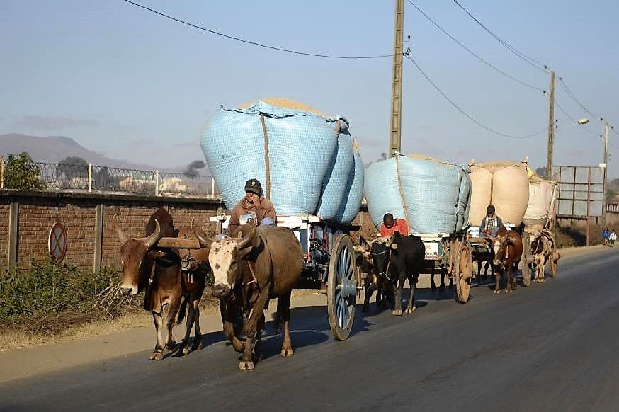
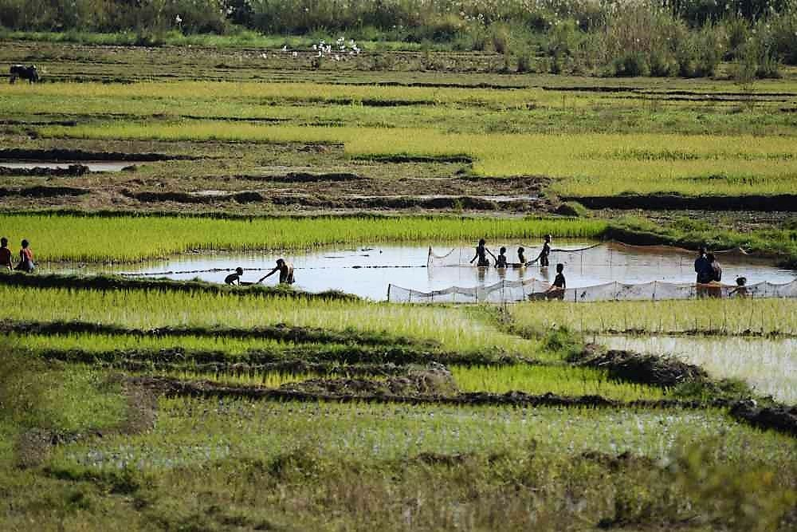
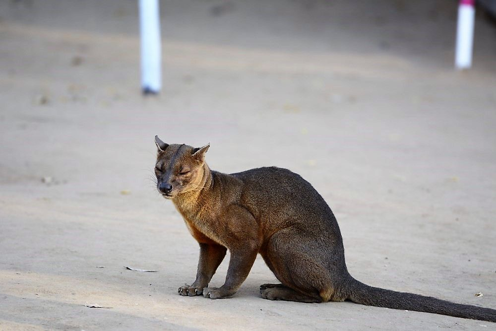
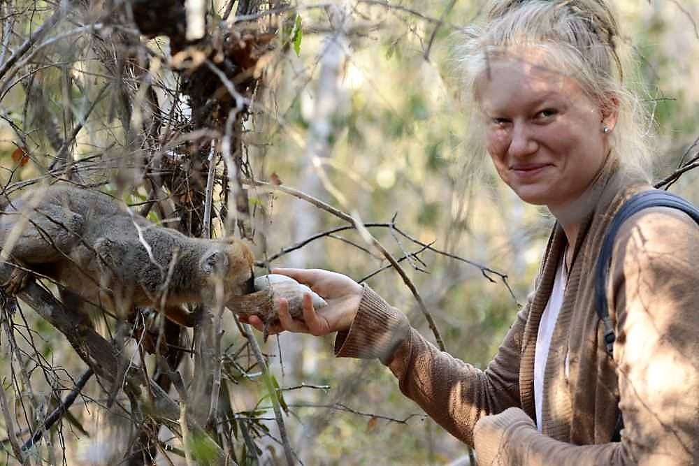
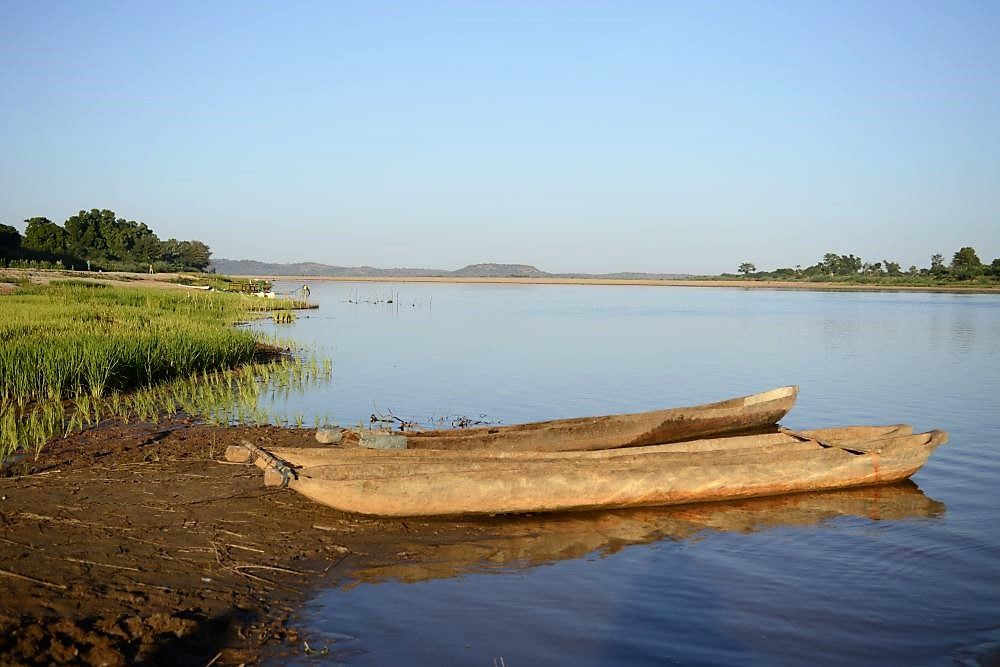
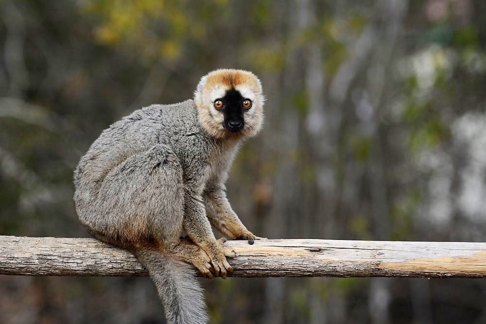
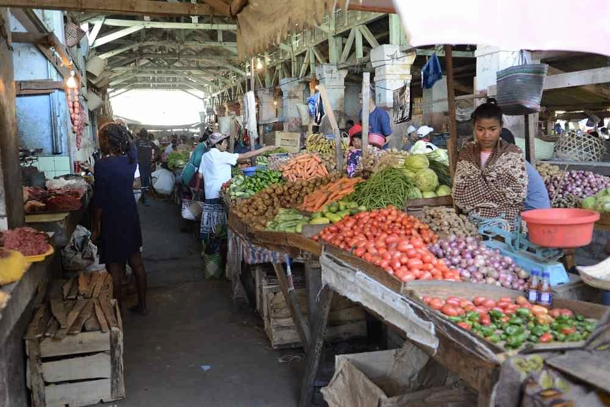
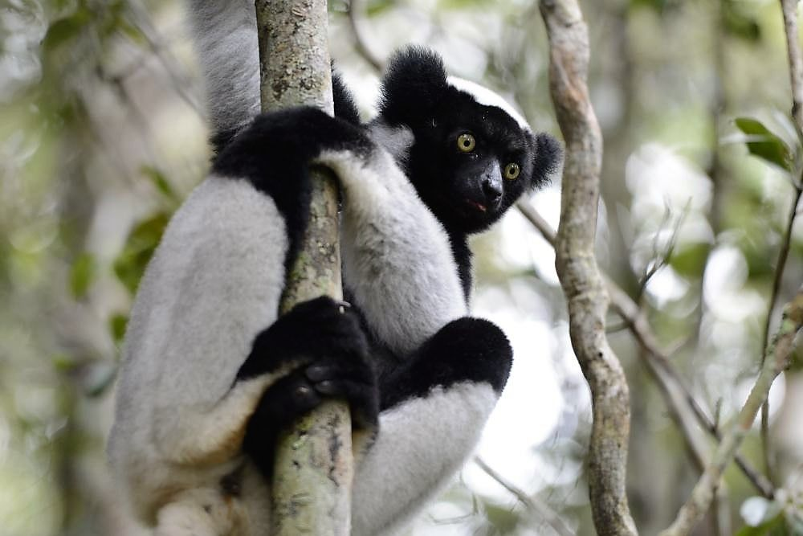

Ein Reisebericht zur Abenteuerreise nach Madagaskar mit PRIORI im Juli 2018
Mit grosser Vorfreude, einem gespannten Gefühl, gutüberlegter Packerei und etwas Aufregung traten wir am 30. Juni 2018 unsere 3-wöchige Abenteuerreise nach Madagaskar an. Wir, das sind Doris und Heinz mit unseren beiden Töchtern, Annina und Leandra, 22 und 19 Jahre alt.

Pünktlich um 04.00 Uhr morgens wurden wir vom bestellten Taxichauffeur für den Transport zum Flughafen Basel-Mulhouse abgeholt. Wir hatten viel Gepäck dabei, denn 3 Taschen waren geladen mit Geschenken für die madagassische Bevölkerung. Uns war bekannt, dass die Menschen dort sehr arm sind. So hatten unsere Töchter Kleider, Schuhe, Kuscheltiere und Taschen bereit-gelegt, ebenfalls haben wir dentale Artikel eingepackt, denn auf unserer Reise wollten wir gerne eine Zahnärztin besuchen.
Leider hatte Air France unseren ersten Flug Basel – Paris unangekündigt storniert, sodass wir den Anschluss-Langstreckenflug von Paris nach Antananarivo nicht erwischen konnten. Etwas enttäuscht und nach einem ersten frühen Kaffee am Airport ging es wieder heim. PRIORI Reisen hatte sich der Planänderung sofort kompetent und hilfreich angenommen, und am darauffolgenden Tag, wieder in aller Herrgottsfrühe, konnten wir endlich starten. Nach einem angenehmen langen Flug sind wir spätabends glücklich in Antananarivo gelandet und sehr herzlich von unserem Fahrer Gaetan abgeholt worden. Die erste Nacht in Madagaskar, im Hotel „Les trois Metis“, genossen wir sehr, jedoch ging es nach einem ersten feinen Frühstück gleich los. Das sollen keine Ausruhferien werden!
Gaetan fuhr uns gekonnt aus der riesigen, lebhaften und bunten Stadt heraus.

Wir waren sehr beeindruckt über die vielen Menschen, die vielen Früchte, Fleisch und Essensstände, die Farben, Frauen mit schwer beladenen Körben auf den Köpfen tragend, Hühner welche über die Strassen rennen, und nicht zuletzt die vielen Zebus, welche mit Waren oder Menschen, schwer beladene Holzkarren ziehen.
Schon bald wurde die Natur dann aber ländlich. Unser Ziel war Antsirabe. Die Landschaft unterwegs, geprägt von terrassenförmig angelegten Reisfeldern ist wunderschön. Unterwegs schenkten wir einem Jungen die ersten Schuhe, welche er mit fröhlichen Luftsprüngen annahm. Abends im Hotel „Royal Palace“ in Antsirabe verarbeiteten wir unsere ersten Eindrücke.

Früh morgens holte uns unser zuverlässige, sehr nette und kompetente Fahrer Gaetan, pünktlich wieder ab. Heute war, infolge des fehlenden Tages, eine sehr lange Autofahrt angekündigt. Es ging ganz an die Westküste, nach Miandrivazo. Unterwegs kauften wir an der Strasse Avocados und frische Bananen. In Miandrivazo machten wir einen Mittagshalt, und Gaetan begleitete uns in ein nettes Restaurant, wo wir das feine Reisgericht sehr genossen. Glücklich und froh, die lange Autofahrt geschafft zu haben, kamen wir schon bei Dunkelheit in Morondava, im sehr netten, direkt am Meer gelegenen Hotel „Chez Maggie“ an. Wir genossen ein ausgesprochen gutes Abendessen im Hotelrestaurant, draussen an der frischen Meeresluft.
Wieder sehr zeitig am Morgen, ging nun unsere Reise zu den beeindruckenden Baobabs Bäumen, wobei uns Gaetan da nicht viel Zeit erlaubte. Auf der Rückreise sollten wir diese prächtigen Bäume nochmals bewundern können.
Unser Ziel war der Nationalpark und Trockenwald Kirindy. Die Strassen wurden immer schlechter, und sie waren schon lange nicht mehr geteert, die Fahrt war holprig und staubig. Wir begegneten einer einsamen jungen Frau mit einem Baby am Rücken festgebunden. Gaetan wollte von ihr wissen, wohin sie denn mitten im Wüstenland gehe. Die junge Frau war geschieden, und wollte nun zu Fuss, ohne Wasser und Lebensmittel, die ganze Strecke welche wir schon mit dem Auto zurückgelegt hatten, nach Morondava laufen. Und das auch noch bei der Hitze!
Im Kirindy Nationalpark angekommen, bezogen wir unsere sehr einfachen Hütten.

Da kann es schon mal vorkommen, dass man zusammen mit einem Gecko, Käfern und Spinnen übernachtet. Parkguides zeigten uns die Fossas, welche die Hauptfeinde der Lemuren sind. Eine Art Wildkatze mit scharfen Zähnen und grossen Pranken. Weil die Fossas Hunger leiden, kommen diese auch in die Anlage und wühlen in den Müllbehältern nach Nahrung. Nach dem einfachen Abendessen, war eine spannende Nachtwanderung angesagt.
Unser Parkführer, ein sehr kompetenter, sympathischer Guide, begleitete uns und zeigte uns viele nachtaktive Tier. So sahen wir, zu dieser Jahreszeit sehr aussergewöhnlich, sogar Schlangen. Unser Guide liess sich sogar von einer Schlage beissen, um weitere Biss-Erfahrungen zu machen. Angenehm an den vielen Tieren in Madagaskar ist, dass sie nicht giftig sind. Auch Riesenspinnen, Geckos und Chamäleons konnten wir bestaunen.

Nach einer kurzen Nacht, ging es frühmorgens erneut in den Park, um die tagaktiven Tiere zu sehen. Ein ganz spezielles Erlebnis war, dass unser Guide einige im Park rumliegende, grosse Muscheln einsammelte, diese mit unserem Trinkwasser füllte und unseren Mädchen in die Hand drückte. Es verging keine Minute, kamen bereits neugierige und durstige Lemuren, um aus der Muschel zu trinken. Noch am selben Tag, nach der erlebnisreichen Wanderung, ging unsere Reise weiter zu den Tsingys von Bemaraha.Wir fuhren über das Hochland, wo die Menschen äusserst arm sind. Oftmals trafen wir Kinder an, welche versuchten einige Löcher in der Strasse aufzufüllen. Sie bettelten nach leeren Petflaschen. Von Gaetan erfuhren wir, dass die Kinder diese Flaschen sammeln würden um Wasser zu holen. Die Kinder freuten sich über ein paar Süssigkeiten, Farbstifte, Kugelschreiber und andere Kleinigkeiten von uns. Wir alle waren über diese Armut sehr erschüttert.
Unterwegs ging die spannende Reise auf der Fähre auf dem Fluss Belo sur Tsiribihina weiter, wobei das Verladen des Autos schon sehr spektakulär war. Die herrliche, einstündige Bootsfahrt war ein Genuss. Die Fahrt, auf Schotterstrassen mit viel Staub, Löchern und Dellen versehen, war anstrengend. Diese Strasse wird aber als Nationalstrasse bezeichnet!
Bis zum Nationalpark, mussten wir mit anderen Autos im Convoy fahren, und wir wurden gebeten, das Auto nicht zu verlassen. Diese Gegend wird leider von Wilderern, welche Zebus stehlen und verschleppen, beherrscht. Von Gaetan erfuhren wir viel über Madagaskar, die korrupte Regierung, das Land und Leben der Leute. Gaetan liebt sein Land, und wir merken, wie traurig ihn selber die Armut seiner Landsleute macht.

Nach einer weiteren kurzen Fährenüberfahrt über den Fluss Manambolo kamen wir müde im Hotel „Grand Tsingy“ an. Wir bezogen einen sehr herzigen Familienbungalow, wo ich die erste Handwäsche machte. Wir würden 3 Nächte hier verbringen – was für eine Wohltat! Am darauffolgenden Tag stand eine Pirogenfahrt auf dem Fluss Manambolo an, bis wir eine Höhle erreichten. Diese durften wir bestaunen und bewandern.

Anschliessend starteten wir, wiederum in Begleitung eines Parkguides, die Wanderung zu den kleinen Tsingys. Zurück im Hotel reichte es sogar für eine kleine Abkühlung im Pool oder einer kleinen Pause auf dem Liegestuhl. Nach dem Essen verfolgten Hotelgäste und Fahrer einen Fussballmatch der zur Zeit stattfindenden Weltmeister-schaften.
Am nächsten Tag fuhr uns Gaetan zum Parkeingang der grossen Tsingys, wo wir alle mit Klettersicherung und Karabiner Haken ausgestattet wurden. Zuerst ging die Wanderung flach in den Wald hinein, und schon bald bat uns der Führer ganz leise zu sein. In den Baumwipfeln erblickten wir Lemuren, welche von Baum zu Baum hüpften, sich aber nicht von uns gestört fühlten.
Bald danach erreichten wir die Tsingys. Die grossen, grauen, spitzen und scharfen Steinformationen.
Und jetzt kam der Aufstieg! Das ist nicht jedermanns Sache! Ich persönlich war leicht überfordert, und die Angst überkam mich. Meine Familie überredete mich mitzukommen und unser Parkguide nahm sich mir voll und ganz an! Darüber bin ich ihm noch heute sehr dankbar. Oben angekommen wurden wir von der atemberaubenden Aussicht belohnt! Weiter ging es über eine Hängebrücke und durch diese speziellen Gesteinsformationen wieder runter. Am Ziel angelangt, waren wir überglücklich, es geschafft zu haben. Wir kauften leckere Zitronen und Orangen und genossen die frischen Früchte.
Gaetan reservierte für uns ein Mittagessen in einem lokalen Restaurant, welches von einer Madagassin geführt wird. Sie bekochte uns mit madagassischem Essen – Maniok einmal gekocht und einmal gegrillt. Dazu gab es Reis und Reiswasser. Es schmeckte hervorragend und war ein ganz spezielles Erlebnis. Gaetan wiederum freute sich, dass uns das madagassische Essen schmeckte.
Nach einer weiteren Nacht im Hotel „Grand Tsingy“, hiess es Abschied nehmen von den Tsingys und wir fuhren denselben Weg wieder zurück bis nach Morondava. Wir wurden wieder kräftig durchgeschüttelt, aber pünktlich zum Sonnenuntergang erreichten wir die Baobab Allee. Unvergesslich war dieser Abend, die eigenartigen und seltenen Baobabs im Abendlicht zu bewundern und zu fotografieren.

Wieder wurden wie im Hotel „Chez Maggie“ in Morondava einquartiert, und wir waren erneut froh, dass wir 2 Nächte dort verbringen konnten. Das Essen dort fanden wir ausgesprochen gut!
Am nächsten Tag hatten wir ein wenig Freizeit. Diese nutzten wir, um ein paar herzige Mitbringsel einzukaufen. Am Nachmittag führte uns Gaetan auf den Markt. Was für tolle Eindrücke dürfen wir mitnehmen, von den vielen farbenfrohen Ständen, Früchten, Fischen, Menschen und Düfte. Anschliessend genossen wir die entspannte Zeit am Meer und lasen in unseren Büchern.
Unsere Reise führte uns erneut nach Antsirabe, wo wir das hübsche Hotel „Couleur Café“ für 2 Nächte bezogen. Die Gartenanlage ist wunderschön. Gaetan führte uns in eine Werkstatt zur Herstellung von Miniatur Fahrrädern aus Recycling Material, Stickereien und Besteckherstellung aus Zebuhorn. Wir waren begeistert und kauften bei der Gelegenheit weitere Mitbringsel ein. Tags darauf besuchten wir ein Waisenheim. Die nette Schwester führte uns im Heim herum, und wir sahen viele Kinder jeden Alters, welche in diesem Heim ein neues, nettes Zuhause finden konnten. Sie scheinen gut aufgehoben dort. Wir übergaben der Schwester eine volle Tasche mit Spielsachen. Mit vielen neuen Eindrücken beendeten wir diesen Tag.
Weiter ging es wieder nach Antananarivo, wo uns Gaetan zu sich nach Hause einlud. Er wollte uns seine Familie vorzustellen. Wir begrüssten seine beiden netten Söhne und seine sympathische Frau, welche uns frischen Ingwertee und Ananas auftischte. Diese spezielle Einladung werden wir nie vergessen.
Nun fuhren wir gegen Osten, unser Ziel war Andasibe und der Regenwald.
Doch vorher war ein Besuch bei einer Zahnärztin in Behenjy eingeplant. Ich unterhielt mich gerne mit der jungen Zahnärztin und erfuhr, dass sie Menschen aus ca. 21 Ortschaften betreut. Der Behandlungsstuhl, übrigens ein recht modernes Teil, war jedoch leider seit einigen Wochen defekt. Bis, dass ein Reparaturdienst komme, würde es sehr lange dauern, erklärte mir die Zahnärztin. Nach einer langen, imposanten und kurvigen Weiterfahrt in Richtung Regenwald, bezogen wir die Lodge „Feon’ny Ala“, mitten im Grün des Regenwaldes.

Am nächsten Morgen marschierten wir, wiederum geführt, in den Regenwald, um die Indri Indris zu finden. Wir waren nicht alleine unterwegs, es hatte mehrere Gruppen, welche die gleichen Absichten hatten. Schon bald wurden wir fündig und erlebten ein beeindruckendes Lemurenkonzert. Wir konnten fantastische Bilder von diesen schönen Tieren machen. Leider stellten wir aber auch fest, dass vom Regenwald schon mehr als die Hälfte abgeholzt wurde, sodass die Lemuren fast keinen Lebensraum mehr haben. Das ist wirklich erschreckend, auch zu sehen, wie die urspünglichen Pflanzen schwinden und durch Eukalyptuspflanzen ersetzt werden, welche sich hervorragend eignen, um Holzkohle herzustellen.Nach einer weiteren Nacht im Regenwald führte uns unsere Route weiter nördlich, bis nach Mahambo, wo wir das Hotel „La Pirogue“ bezogen, und ein sehr gemütliches, letztes Abendessen mit Gaetan genossen.
Am Morgen verabschiedeten wir uns schweren Herzens von Gaetan und bestiegen ein Boot, welches uns zur Insel Saint Marie brachte. Dort wurden wir von einem Hotelchauffeur in einem sehr alten und kleinen Auto abgeholt. Er fuhr uns bis an die Küste der Insel, und von da aus ging es in einem kleinen Motorboot rüber zur kleinen Insel Iles aux Nattes, wo wir 5 Tage verbrachten.
Wir bezogen unseren Bungalow, direkt am Meer gelegen – ein Traum.
Da das Wetter für den nächsten Tag noch sonnig angekündigt war, riet uns Alain, der Hotelbesitzer, die Wal-Tour zu machen. Diesen Rat befolgten wir, und gemeinsam mit Larissia, einer jungen Frau, welche sich mit Walen auskennt, bestiegen wir das Hotel-Motorboot. Und schon bald wurden wir fündig – es war ein unglaubliches Schauspiel! Wir erlebten die Wale sehr aktiv, und konnten diese aus nächster Nähe bestaunen. Ein Erlebnis, wie wir es noch nie geniessen konnten. Total beglückt und mit vielen Eindrücken und fantastischen Fotos kamen wir wieder zurück. Ab jetzt war das Wetter leider eher feucht und kühl. Deshalb konnten wir den herrlichen Strand wenig nutzen. Dafür bewanderten wir die Insel, lasen viel oder machten Spiele. Erholsam war es auf jeden Fall. Zu erwähnen ist noch, dass das Hotel „Maningory“ sehr leckeres Baguettebrot zum Frühstück serviert. Das Essen allgemein war wunderbar.
Schon bald packten wir unsere Koffer wieder, um mit Madagasikara Airline wieder in die Hauptstadt zu fliegen. Der Flug war absolut toll, sehr nette Bedienung und wir waren nur 7 Gäste!
Was für eine frohe Überraschung, als wir in Antananarivo wieder von Gaetan abgeholt wurden. Dieser brachte uns in unser Tageszimmer im Hotel „Les trois Metis“, da wo alles vor 3 Wochen anfing. Wir machten uns etwas frisch und dann begleitete uns Gaetan in die Souvenirgeschäfte, wo wir nochmals Gewürze, Korbwaren und andere kleine Mitbringsel kauften. Fertig gepackt und bereit für den Rückflug, chauffierte uns Gaetan zu später Stunde zum Flughafen. Der Abschied war fast ein wenig emotional – Gaetan ist ein wunderbarer Mensch, ein stolzer Madagasse. Wir können ihn als Guide wärmstens weiterempfehlen. Der Rückflug verlief angenehm und ohne Flugausfälle. Beglückt, und mit vielen vielen wunderbaren Eindrücken beendeten wir unsere Abenteuerreise nach Madagaskar. Was uns sicher immer wieder beschäftigen wird, ist die Armut der Menschen, das einfache Leben, aber trotzdem frohen und lieben Menschen von Madagaskar.
Ein herzliches Dankeschön an PRIORI Reisen. Unsere Abenteuerreise nach Madagaskar wurde perfekt organisiert, all unsere Wünsche wurden berücksichtigt und erfüllt. Danke für alles! Herzlichst“
Doris, Annina, Leandra und Heinz R.
Hier finden Sie den originalen Reisebericht mit weiteren Fotos im PDF-Format.